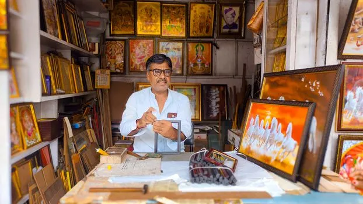
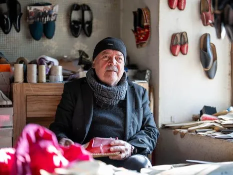
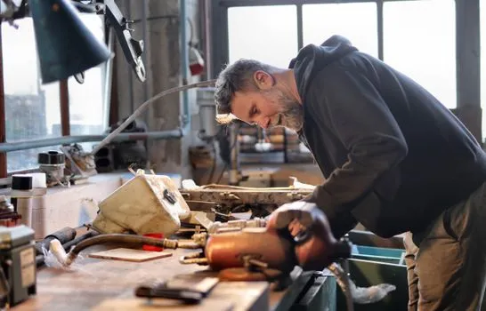
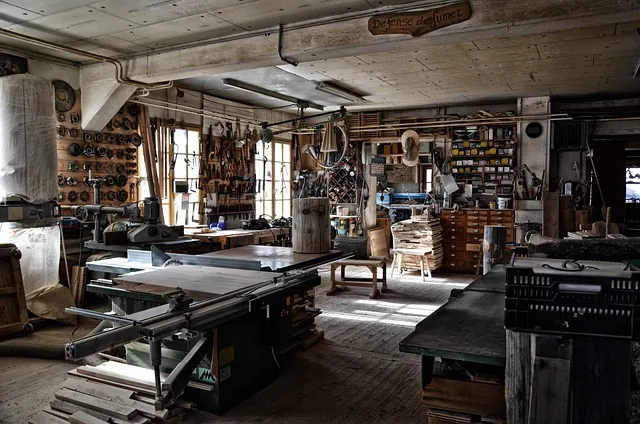
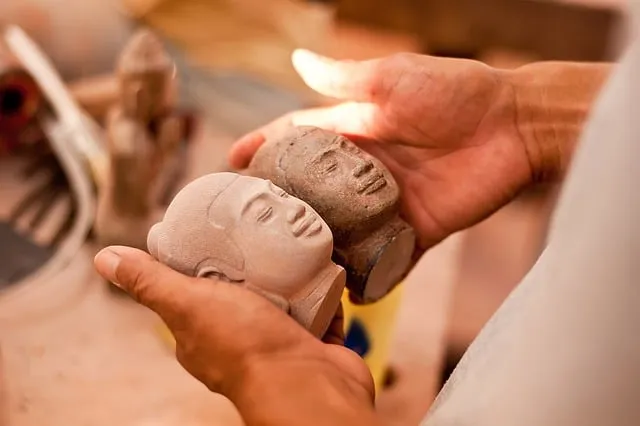
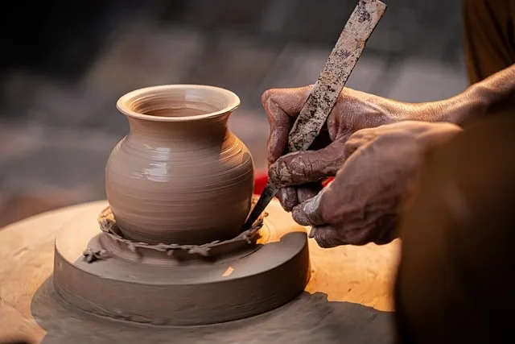
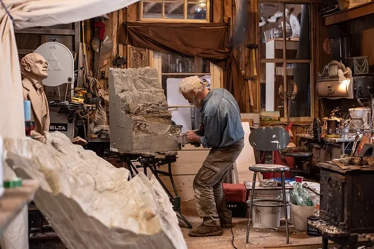

pexels 38178433Ashutosh Kumar
Portrait of an artisan in a Jodhpur framing shop surrounded by artwork.
Original sourcesmall business artisan workshop owner · temporary stock only

pexels 38178433Ashutosh Kumar
Portrait of an artisan in a Jodhpur framing shop surrounded by artwork.
Original source
pexels 30904500Ömer Furkan Yakar
Elderly craftsman making shoes in a cozy workshop in Kahramanmaraş, Turkey.
Original sourceGustavo Fring
African American seamstress smiling at work with a 'Support Small Businesses' sign.
Original source
pexels 3822850Andrea Piacquadio
Side view of brutal male worker in casual wear standing at workbench and fixing metal details while using tools and working in wor
Original source
pixabay 4863393ThMilherou
workshop, carpenter, crafts, artisan, drink, work, tool, vintage, workshop, workshop, workshop, workshop, workshop, carpenter, car
Original source
pixabay 9375772Wishrich
buddha, statue, head, figure, buddha purnima, stone, cambodia, craft, handmade
Original source
pixabay 10258355MrHà
pottery, handcraft, ceramic vessel, potter's wheel, shape, creative, art, tradition, clay, vietnam, artist, hand, hanoi, creat
Original source
pixabay 4622221ottawagraphics
artist, studio, art, sculpture, workshop, old man, tools, sculptor, creation, exhibit, working, professional, artwork, artist, art
Original source